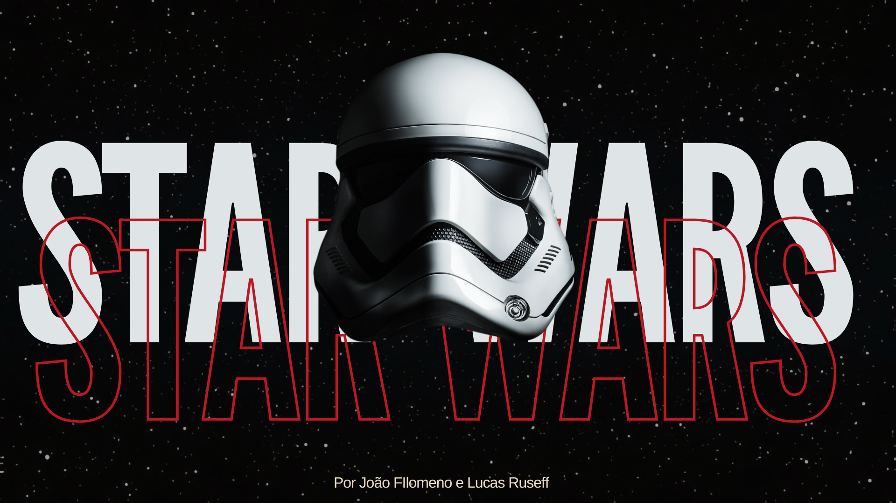
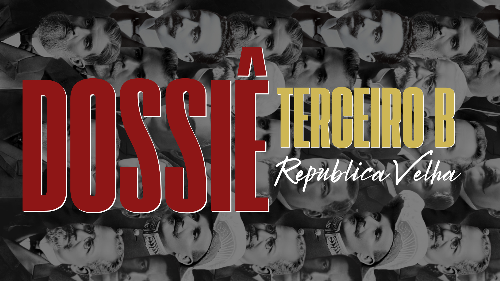
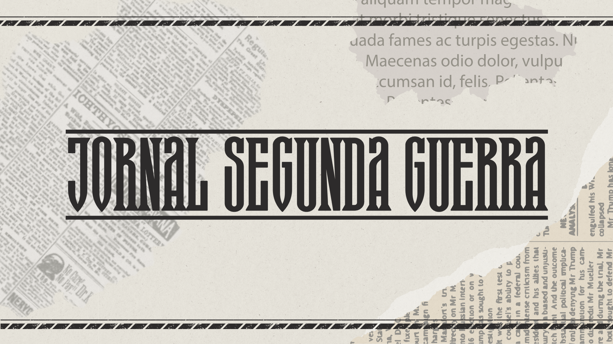

Inicio
Ensino médio
Tecnico
PPE
Humanas*2
Trabalhos
Esse trabalho foi para, em duplas, fazermos uma pesquisa sobre cenas de filmes que apresentam referências á segunda guerra mundial apontando cenas, trechos, falas e comportamentos que demonstrem as características e o funcionamento dos regimes totalitários.
Totalitarismo e Segunda Guerra Mundial
Habilidades: C5-H30, C6-H36, H39, H40


Dossiê Terceiro B
Habilidades: C2-H10, C4 H22, H26, H27.
Esse é um dossiê feito pela turma 3B sobre sobre os presidentes brasileiros do período compreendido entre (1894 e 1930) com equipes pesquisando sobre cada presindente.
A ideia desse trabalho foi, em grupos, fazer um jornal sobre os acontecimentos da segunda guerra mundial, apontando acontecimentos na visão jornalistica
Jornal Segunda Guerra
Habilidades: C6-H39.
